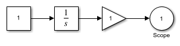

clc;
open_system(new_system('model_auto'));
add_block('simulink/Commonly Used Blocks/Constant', 'model_auto/Constant');
set_param('model_auto/Constant','position',[140,80,180,120]);
add_block('simulink/Commonly Used Blocks/Integrator','model_auto/Integrator');
set_param('model_auto/Integrator','position',[220,80,260,120]);
add_line('model_auto','Constant/1','Integrator/1');
add_block('simulink/Commonly Used Blocks/Gain','model_auto/Gain');
set_param('model_auto/Gain','position',[300,80,340,120]);
add_line('model_auto','Integrator/1','Gain/1');
add_block('simulink/Commonly Used Blocks/Out1','model_auto/Scope');
set_param('model_auto/Scope','position',[380,80,420,120]);
add_line('model_auto','Gain/1','Scope/1');
RootParameterNames = fieldnames(get_param(0,'ObjectParameters'));
load_system('add_script')
GlobalParameterValue = get_param(0,'CurrentSystem')
ModelParameterValue = get_param('add_script','ModelVersion')
BlockPaths = find_system('add_script','Type','Block')
add_script
set_param('add_script','Solver','ode15s','StopTime','90')
text = fileread('gravity_algorithm.pdf');
Lines = strsplit(text,newline);
k=1;
for i=1:length(Lines)
if contains(Lines{i},"<a")
newStr = extractBetween(Lines{i},"<a",">");
for j=1:length(newStr)
ValueStorage{k}=newStr{j};
k=k+1;
end
end
end
ValueStorage=vertcat("HTML Tag Value2",'ValueStorage');
ValueStorage_XLS=cellstr(ValueStorage);
xlswrite("gravity.xlsx",ValueStorage_XLS);
GlobalParameterValue =
'add_script'
ModelParameterValue =
'1.2'
BlockPaths =
4×1 cell array
{'add_script/Add' }
{'add_script/Display'}
{'add_script/Value1' }
{'add_script/Value2' }
